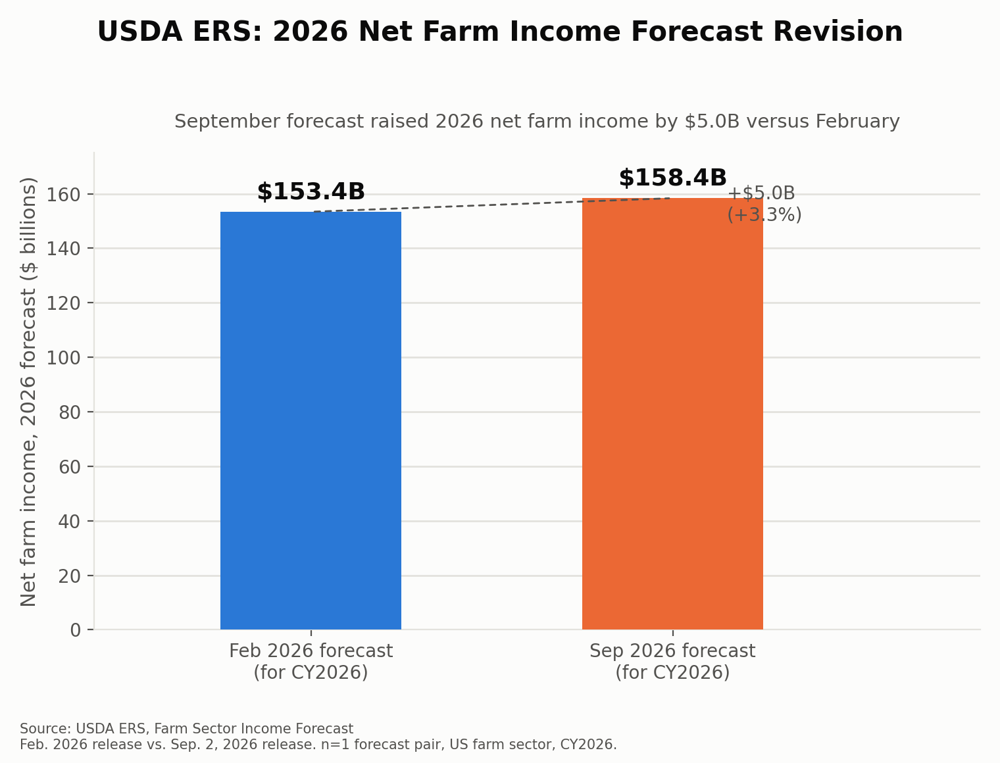

Is USDA's September 2026 farm income forecast as claimed?
Fact-check of a five-part claim about USDA ERS's September 2, 2026 farm sector income forecast, cross-checked against the primary release and the February 2026 forecast it revises.
Verdict: TRUE — all five sub-claims confirmed
Every number in the claim matches USDA's Economic Research Service (ERS) farm income forecast release. The claim correctly identifies the $158.4 billion figure as net farm income (a broader, accrual-based measure), not the similarly-sized but distinct net cash farm income series — a distinction worth flagging because the two series are close enough in value in some releases to be mixed up.
Claim-by-claim comparison
Sub-claim
USDA ERS Sept. 2, 2026 figure
Result
2026 net farm income = $158.4B
$158.4 billion (net farm income, not net cash income)
Match
2.6% nominal decline from 2025
−$4.3B / −2.6% nominal vs. 2025 ($162.7B)
Match
5.5% real decline from 2025
−$9.1B / −5.5% in inflation-adjusted 2026 dollars
Match
~70% rise in government payments
Direct government payments $47.4B, up $19.5B / 69.8% from $27.9B in 2025
Match
Production costs up 4.5% to $492.8B
Total production expenses $492.8B, up $21.2B / 4.5% from 2025
Match
$5B higher than Feb. 2026 forecast
Feb. 2026 forecast for 2026 net farm income: $153.4B → Sept.: $158.4B = +$5.0B
Match
Chart: Feb 2026 vs. Sept 2026 forecast for 2026 net farm income

USDA ERS Farm Sector Income Forecast, February 2026 release vs. September 2, 2026 release. Net farm income, calendar year 2026, nominal dollars. n=1 forecast comparison pair, US farm sector.
Why this is easy to get wrong: net farm income vs. net cash farm income
Observed: ERS publishes two headline income series for the same year. In the September 2026 release, net farm income for 2026 is $158.4B and net cash farm income is $176.4B. But in the February 2026 release, net cash farm income for 2026 was $158.5B — a figure nearly identical to the September release's net farm income figure, despite being a different metric from a different forecast round.
Inference: A careless comparison could mistake the February net cash income figure ($158.5B) for a "match" against the September net farm income figure ($158.4B), or conclude the forecast was essentially flat. The claim under review avoids this trap: it correctly compares net farm income to net farm income ($153.4B → $158.4B, a genuine $5.0B revision), which is what USDA's own outlook commentary reports.
Note: the 2025 comparison base for government payments differs slightly between the two releases ($30.5B vs. $27.9B) because ERS also revises its estimate of the prior year each time it updates the forecast — a routine and expected feature of the series, not an inconsistency in this fact-check.
Confidence and limitations
Core figures ($158.4B net farm income, 2.6%/5.5% declines, $492.8B expenses, $5B upward revision) were retrieved directly from ERS's "Highlights from the Farm Income Forecast" page and corroborated by independent secondary press coverage (Farm Policy News, Pro Farmer, American Farm Bureau, Hoosier Ag Today, Agri-Pulse) — all converging on identical figures.
The government-payments figures ($47.4B / 69.8%, and the February $44.3B / 45.2%) and the February net-farm-income figure ($153.4B) were confirmed via multiple independent secondary sources reporting ERS's own release language, rather than a direct primary-page fetch of the archived February 2026 release (the live ERS pages now show the current, September, forecast; an archived February snapshot was not reachable in this session). Internal arithmetic consistency (e.g., $492.8B − $15.1B = $477.7B; $158.4B − $5.0B = $153.4B; $47.4B − $19.5B = $27.9B) supports these figures.
Overall confidence: high for all six sub-claims.
Sources
USDA ERS, "Highlights from the Farm Income Forecast" — ers.usda.gov (September 2, 2026 update)
USDA ERS, "Farm Sector Income Forecast" — ers.usda.gov
USDA ERS, "U.S. net farm income in 2025: Revisions between the September 2025 forecast and February 2026 forecast" (chart gallery #82351) — ers.usda.gov
Farm Policy News (Illinois), "USDA's 2026 Farm Income Outlook Improves, but Expenses Sharply Higher" — farmpolicynews.illinois.edu
American Farm Bureau Federation, "USDA Revises Farm Income Higher, but Costs Still Bite" — fb.org
Hoosier Ag Today, "USDA Forecast: Farm Profits to Drop 5.5% After Inflation as Expenses Keep Climbing" — hoosieragtoday.com
Agri-Pulse, "Farm earnings outlook brightens, though expected profits remain below 2025" — agri-pulse.com (February 2026 forecast figures)
Ag Bull Trading, "U.S. 2026 Farm Income Falls Despite Record $47.4 Billion in Government Payments" — agbull.com